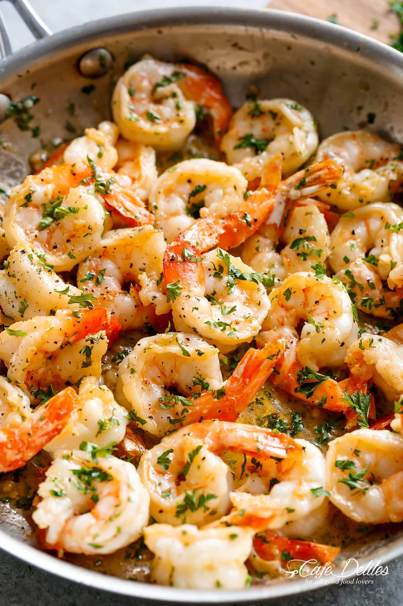

Garlic Butter Shrimp Scampi

Description
Garlic Butter Shrimp Scampi is so quick and easy. A garlic buttery scampi
sauce with a hint of white wine & lemon in less than 10 minutes! It can be
enjoyed as an appetizer, light meal OR for dinner with your favourite
pasta of choice! You can also keep it low carb and serve over zucchini
noodles or with steamed cauliflower. Either way it’s delicious and even
better than an Italian restaurant Scampi!
Ingredients
- 2 tablespoons olive oil
- 4 tablespoons butter
- 4 to 5 garlic cloves
- 1 1/4 pounds shrimp
- 1 pinch salt
- 1 pinch cracked pepper
- 1/4 cup dry white wine
- 1/2 teaspoon red pepper flakes
- 2 tablespoons lemon juice
- 1/4 cup fresh parsley
Steps
-
Heat olive oil and 2 tablespoons of butter in a large pan or skillet.
Add garlic and sauté until fragrant (about 30 seconds – 1 minute). Then
add the shrimp, season with salt and pepper to taste and sauté for 1-2
minutes on one side (until just beginning to turn pink), then flip.
-
Pour in wine (or broth), add red pepper flakes (if using). Bring to a
simmer for 1-2 minutes or until wine reduces by about half and the
shrimp is cooked through (don’t over cook your shrimp).
-
Stir in the remaining butter, lemon juice and parsley and take off heat
immediately.
-
Serve over rice, pasta, garlic bread or steamed vegetables (cauliflower,
broccoli, zucchini noodles).
Home